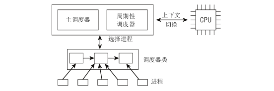
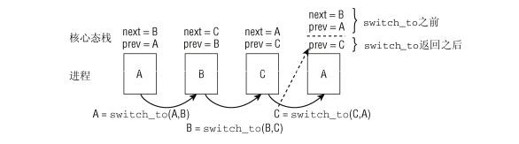
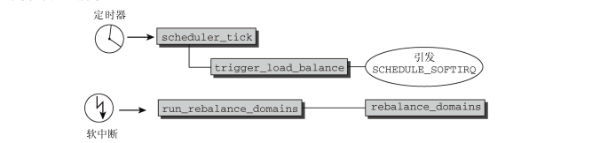

进程调度
Table of Contents
内核为每个进程维持一个上下文。上下文就是内核重新启动一个被抢占的进程所需的状态，由一些对象值组成，包括通用寄存器、浮点寄存器、程序计数器、用户栈、状态寄存器、内核栈和各种内核数据结构（例如描述地址空间的页表、包含当前进程信息的进程表，进程已打开文件的文件表）。
某一时刻，内核决定使用先前的一个被抢占的进程来抢占当前进程，这种决策叫调度。内核选择一个新的进程运行，称之为内核调度了这个进程。内核调度新进程运行后使用 上下文切换 的机制来将控制权转移到新的进程。上下文切换过程：
- 保存当前进程的上下文
- 恢复某个先前被抢占的进程的上下文
- 将控制权传递给新进程
1. 调度器
内核在内存中保存了所有进程的实例，每个进程之间通过一些结构互相连接。
调度器任务是使得所有进程共享CPU时间，创造并行执行的错觉。该任务分为两个不同部分：
- 一个涉及调度策略
- 另一个涉及上下文切换。
1.1. 概览
内核需要提供一种方法，在各个进程之间尽可能公平的共享CPU时间，同时还需要考虑进程的优先级。
schedule函数是理解调度操作的起点。经典的调度器对系统中的进程分别计算时间片，使进程运行直至时间片用尽。在所有进程的所有时间片都已经用尽时，则需要重新计算。相比之下，当前的调度器只考虑进程的等待时间，即进程在就绪队列（run-queue）中已经等待了多长时间。对CPU时间需求最严格的进程被调度执行。
调度器的一般原理是，按所能分配的计算能力，向系统中的每个进程提供最大的公正性。
如上图所示，所有的可运行进程都按其等待时间在一个红黑树中排序。 等待CPU时间最长的进程是最左侧的项，调度器下一次会考虑该进程。等待时间稍短的进程在该树上从左至右排序。
除了红黑树外，就绪队列还装备了虚拟时钟。 该时钟的时间流逝速度慢于实际的时钟，精确的速度依赖于当前等待调度器挑选的进程的数目。假定该队列上有4个进程，那么虚拟时钟将以实际时钟四分之一的速度运行。如果以完全公平的方式分享计算能力，那么该时钟是判断等待进程将获得多少CPU时间的基准。在就绪队列等待实际的20秒，相当于虚拟时间5秒。4个进程分别执行5秒，即可使CPU被实际占用20秒。
假定就绪队列的虚拟时间是 fair_clock ，而进程的等待时间为 wait_runtime 。为排序红黑树上的进程，内核使用差值 fair_clock - wait_runtime ，因此等待时间越长，越靠左。 fair_clock 是完全公平调度的情况下进程将会得到的CPU时间的度量，而 wait_runtime 直接度量了实际系统的不足造成的不公平。
当进程允许运行时，会从 wait_runtime 减去它已经运行的时间。这样，在按时间排序的树中它会向右移动，另一个进程将成为最左侧节点，下一次会被调度器选择。
注意：在进程运行时fair_clock 中的虚拟时钟会增加。 这实际上意味着，进程在完全公平的系统中接收的CPU时间份额，是推演自在实际的CPU上执行花费的时间。这减缓了削弱不公平状况的过程：减少 wait_runtime 等价于降低进程受到的不公平对待的数量，但内核无论如何不能忘记，用于降低不公平性的一部分时间，实际上属于处于完全公平世界中的进程。 再次假定就绪队列上有4个进程，而一个进程实际上已经等待了20秒。现在它允许运行10秒：此后的 wait_runtime 是10，但由于该进程无论如何都会得到该时间段中的10/4 = 2秒，因此实际上只有8秒对该进程在就绪队列中的新位置起了作用。
以上介绍的是完全公平调度器的原理，现在调度器实现已经变得很复杂：
- 需要考虑进程的不同优先级（即， nice 值），更重要的进程必须比次要进程更多的CPU时间份额。
- 进程不能切换得太频繁，如果切换太频繁时，过多时间花费在进程切换的过程中，而不是用于实际的工作。两次相邻的任务切换之间，时间也不能太长，否则会累积比较大的不公平值。
- 理解调度器
- 理解调度决策的一个好方法是，在编译时激活调度器统计。这会在运行时生成文件 “/proc/sched_debug”，其中包含了调度器当前状态所有方面的信息。
- Documentation/ 目录下包含了一些文件，涉及调度器的各个方面。
1.2. 数据结构
调度子系统各个组建的概览： 
激活调度器的两种方法：
- 进程睡眠，或者由于其他原因放弃cpu。
- 周期性的检测是否有必要进行进程切换。
核心调度器（主调度器和周期性调度器）与其他两个组件（CPU和调度器类）的交互：
调度类用于判断接下来运行哪个进程。内核支持不同的调度策略（完全公平调度、实时调度、在无事可做时调度空闲进程），调度类使得能够以模块化方法实现这些策略，即一个类的代码不需要与其他类的代码交互。
在调度器被调用时，它会查询调度器类，得知接下来运行哪个进程。
在选中将要运行的进程之后，必须执行底层任务切换。这需要与CPU的紧密交互。
每个进程都刚好属于某一调度类，各个调度类负责管理所属的进程。通用调度器自身完全不涉及进程管理，其工作都委托给调度器类。
1.2.1. task_struct中的调度相关成员
struct task_struct { int prio, static_prio, normal_prio; struct list_head run_list; const struct sched_class *sched_class; struct sched_entity se; unsigned int policy; cpumask_t cpus_allowed; unsigned int time_slice; };
prio 和 normal_prio 表示动态优先级，static_prio 表示进程的静态优先级。 静态优先级是进程启动时分配的优先级。它可以用 nice和 sched_setscheduler 系统调用修改，否则在进程运行期间会一直保持恒定。normal_priority 表示基于进程的静态优先级和调度策略计算出的优先级。因此，即使普通进程和实时进程具有相同的静态优先级，其普通优先级也是不同的。进程分支时，子进程会继承普通优先级。
但调度器考虑的优先级则保存在 prio 。由于在某些情况下内核需要暂时提高进程的优先级，因此需要prio来表示。
- rt_priority 表示实时进程的优先级。该值不会代替先前讨论的那些值！最低的实时优先级为0，而最高的优先级是99。值越大，表明优先级越高。这里使用的惯例不同于 nice 值。
- sched_class 表示该进程所属的调度器类。
调度器不限于调度进程，还可以处理更大的实体。这可以用于实现组调度：可用的CPU时间可以首先在一般的进程组（例如，所有进程可以按所有者分组）之间分配，接下来分配的时间在组内再次分配。
由于调度器是处理调度实体，所以在task_struct中嵌入 sched_entity 实例，以供调度器操作。
- policy 保存了对该进程应用的调度策略。Linux支持5个可能的值。
- SCHED_NORMAL 用于普通进程，我们主要讲述此类进程。它们通过完全公平调度器来处理。
- SCHED_BATCH 和 SCHED_IDLE 也通过完全公平调度器来处理，不过可用于次要的进程。SCHED_BATCH 用于非交互、CPU使用密集的批处理进程。
- SCHED_RR 和 SCHED_FIFO 用于实现软实时进程。 SCHED_RR 实现了一种循环方法，而 SCHED_FIFO 则使用先进先出机制。这些不是由完全公平调度器类处理，而是由实时调度器类处理。
//判断给出的调度策略是否属于实时类。 static inline int rt_policy(int policy) //判断给定进程的调度策略是否属于实时类。 static inline int task_has_rt_policy(struct task_struct *p)
- cpus_allowed 是一个位域，在多处理器系统上使用，用来限制进程可以在哪些CPU上运行。
- run_list 和 time_slice 是循环实时调度器所需要的，但不用于完全公平调度器。 run_list是一个表头，用于维护包含各进程的一个运行表，而 time_slice 则指定进程可使用CPU的剩余时间段。
如果活动进程设置了 TIF_NEED_RESCHED 标识，则调度器会将CPU从该进程回收，并授予新的进程。
1.2.2. 调度器类
对于各个调度器类，都必须提供 struct sched_class 的实例，其结构如下：
struct sched_class { const struct sched_class *next; void (*enqueue_task) (struct rq *rq, struct task_struct *p, int wakeup); void (*dequeue_task) (struct rq *rq, struct task_struct *p, int sleep); void (*yield_task) (struct rq *rq); void (*check_preempt_curr) (struct rq *rq, struct task_struct *p); struct task_struct * (*pick_next_task) (struct rq *rq); void (*put_prev_task) (struct rq *rq, struct task_struct *p); #ifdef CONFIG_SMP unsigned long (*load_balance) (struct rq *this_rq, int this_cpu, struct rq *busiest, unsigned long max_load_move, struct sched_domain *sd, enum cpu_idle_type idle, int *all_pinned, int *this_best_prio); int (*move_one_task) (struct rq *this_rq, int this_cpu, struct rq *busiest, struct sched_domain *sd, enum cpu_idle_type idle); #endif void (*set_curr_task) (struct rq *rq); void (*task_tick) (struct rq *rq, struct task_struct *p); void (*task_new) (struct rq *rq, struct task_struct *p); };
- enqueue_task 向就绪队列添加一个新进程。在进程从睡眠状态变为可运行状态时，即发生该操作。
dequeue_task 提供逆向操作，将一个进程从就绪队列去除。事实上，在进程从可运行状态切换到不可运行状态时，就会发生该操作。
内核有可能因为其他理由将进程从就绪队列去除，比如，进程的优先级可能需要改变。
就绪队列（run queue）在完全公平调度器中的结构为红黑树。
- 通过 sched_yiele 系统调用，进程可以放弃对处理器的控制权，内核会调用调度器的 yield_task。
- check_preempt_curr， 用一个新唤醒的进程来抢占当前进程。例如，在用 wake_up_new_task 唤醒新进程时，会调用该函数。
- pick_next_task 用于选择下一个将要运行的进程，而 put_prev_task 则在用另一个进程代替当前运行的进程之前调用。
- 在进程的调度策略发生变化时，需要调用 set_curr_task 。
- task_tick 在每次激活周期性调度器时，由周期性调度器调用。
- new_task 用于建立 fork 系统调用和调度器之间的关联。每次新进程建立后，则用 new_task 通知调度器。
标准函数 activate_task 和 deactivate_task 调用前述的入队和出队函数，提供进程在就绪队列的入队和离队功能。
1.2.3. 就绪队列
各个CPU都有自身的就绪队列。活动进程只会出现在一个就绪队列中。当进程注册到就绪队列时，嵌入的 se（sched_entry）结构的 on_rq 置为 1，否则为0。
就绪队列是全局调度器许多操作的起点。但要注意，进程并不是由就绪队列的成员直接管理的！这是各个调度器类的职责，因此在各个就绪队列中嵌入了特定于调度器类的子就绪队列。
struct rq { /* runqueue lock: */ spinlock_t lock; /* * nr_running and cpu_load should be in the same cacheline because * remote CPUs use both these fields when doing load calculation. */ unsigned long nr_running; //指定了队列上可运行进程的数目，不考虑其优先级或调度类。 #define CPU_LOAD_IDX_MAX 5 unsigned long cpu_load[CPU_LOAD_IDX_MAX]; //用于跟踪此前的负荷状态。 /* 就绪队列的当前负荷 */ struct load_weight load; struct cfs_rq cfs; //完全公平调度器的子就绪队列 struct rt_rq rt; //实时调度器的子就绪队列 //curr指向当前进程的task_struct实例 //idle指向idle进程的task_struct实例 struct task_struct *curr, *idle; /** * clock 和 prev_raw_clock 用于实现就绪队列自身的时钟。每次调用周期性调度器时，都会更 * 新 clock 的值。另外内核还提供了标准函数 update_rq_clock ，可在操作就绪队列的调度器中 * 多处调用，例如，在用 wakeup_new_task 唤醒新进程时。 */ u64 clock, prev_clock_raw; };
系统的所有就绪队列都在 runqueues 数组中，该数组的每个元素分别对应于系统中的一个CPU。
static DEFINE_PER_CPU_SHARED_ALIGNED(struct rq, runqueues); /* 内核还定义了一些便捷的宏 */ #define cpu_rq(cpu) (&per_cpu(runqueues, (cpu))) #define this_rq() (&__get_cpu_var(runqueues)) #define task_rq(p) cpu_rq(task_cpu(p)) #define cpu_curr(cpu) (cpu_rq(cpu)->curr)
1.2.4. 调度实体
struct sched_entity { /* load 指定了权重，决定了各个实体占队列总负荷的比例。计算负荷权重是调度器的一项重任，因为CFS所需的虚拟时钟的速度最终依赖于负荷 */ struct load_weight load; //run_node 是标准的树结点，使得实体可以在红黑树上排序。 struct rb_node run_node; //该实体当前是否在就绪队列上接受调度 unsigned int on_rq; u64 exec_start; u64 sum_exec_runtime; u64 vruntime; u64 prev_sum_exec_runtime; };
在进程运行时，我们需要记录消耗的CPU时间，以用于完全公平调度器。 sum_exec_runtime即用于该目的。跟踪运行时间是由 update_curr 不断累积完成的。调度器中许多地方都会调用该函数，例如，新进程加入就绪队列时，或者周期性调度器中。每次调用时，会计算当前时间和 exec_start 之间的差值， exec_start 则更新到当前时间。差值则被加到 sum_exec_runtime 。
在进程执行期间虚拟时钟上流逝的时间数量由 vruntime 统计。
- 在进程被撤销CPU时，其当前 sum_exec_runtime 值保存到 prev_exec_runtime 。此后，在进程抢占时又需要该数据。但请注意，在 prev_exec_runtime 中保存 sum_exec_runtime 的值，并不意味着重置 sum_exec_runtime ！原值保存下来，而 sum_exec_runtime 则持续单调增长。
1.3. 处理优先级
1.3.1. 优先级的内核表示
在用户空间中可以通过 nice 命令设置进程的静态优先级，系统内部通过 nice系统调用 来实现。
nice --help Usage: nice [OPTION] [COMMAND [ARG]...] Run COMMAND with an adjusted niceness, which affects process scheduling. With no COMMAND, print the current niceness. Niceness values range from -20 (most favorable to the process) to 19 (least favorable to the process). Mandatory arguments to long options are mandatory for short options too. -n, --adjustment=N add integer N to the niceness (default 10) --help display this help and exit --version output version information and exit
进程的nice值在 -20 和 +19 之间， 值越低表示优先级越高。
内核中使用 0-139 来表示内部优先级。值越低优先级越高。 0-99 的优先级由实时进程使用。 nice值的 [-20,+19] 映射到 100-139 ，实时进程的优先级总是比普通进程更高。
#define MAX_USER_RT_PRIO 100 //实时进程最大优先级 #define MAX_RT_PRIO MAX_USER_RT_PRIO //普通进程最小优先级 #define MAX_PRIO (MAX_RT_PRIO + 40) #define DEFAULT_PRIO (MAX_RT_PRIO + 20) #define NICE_TO_PRIO(nice) (MAX_RT_PRIO + (nice) + 20) #define PRIO_TO_NICE(prio) ((prio) - MAX_RT_PRIO - 20) #define TASK_NICE(p) PRIO_TO_NICE((p)->static_prio)
1.3.2. 优先级计算
优先级的计算需要考虑进程的 动态优先级（task_struct->prio） 、 普通优先级（task_struct->normal_prio） 和 静态优先级（task_struct->static_prio） 。
计算进程的优先级： p->prio = effective_prio(p);
//计算进程当前的优先级 static int effective_prio(struct task_struct *p) { p->normal_prio = normal_prio(p); /* * 如果是实时进程，或者提升到了实时进程，保持优先级不变。 * 否则，返回普通优先级。 */ if (!rt_prio(p->prio)) //rt_prio 检测普通优先级是否在实时范围中 return p->normal_prio; return p->prio; } static inline int normal_prio(struct task_struct *p) { int prio; if (task_has_rt_policy(p))//如果进程具有实时调度策略 /* rt_priority的值越高，则优先级越高，而内核中值越低，优先级越高。 所以基于以下算法来计算优先级 */ prio = MAX_RT_PRIO-1 - p->rt_priority; else //__normal_prio只适用普通进程，返回进程的静态优先级。 prio = __normal_prio(p); return prio; }
| 进程类型/优先级 | static_prio | normal_prio | prio |
|---|---|---|---|
| 非实时进程 | static_prio | static_prio | static_prio |
| 优先级提高的非实时进程 | static_prio | static_prio | prio不变 |
| 实时进程 | static_prio | MAX_RT_PRIO-1-rt_priority | prio不变 |
新创建的进程通过wake_up_new_task唤醒时，或者通过 nice系统调用 改变静态优先级时，使用上述方法计算进程的 p->prio 。
进程创建子进程时，子进程动态优先级（task_struct->prio）设置为父进程的普通优先级。
1.3.3. 计算负荷权重
进程的重要性除了考虑优先级外，还需考虑 task_struct->se.load 的负荷权重。 set_load_weight 负责根据进程类型及其静态优先级计算负荷权重。
负荷权重包含在数据结构 load_weight 中：
struct load_weight { unsigned long weight, inv_weight; };
/* * 进程每降低一个nice值，多获取10%的cpu时间，每升高一个nice值，放弃10%的时间 * * 数组项中的每个值都对应进程的[0, 39]中每个nice级别，数组相邻项之间的乘数因子约等于1.25 * * 例如A、B进程的nice值为0，由下表得知其权重为1024，A进程优先级加1，其权重为（1024/1.25=820） * 此时 A进程的CPU份额为（820/(820+1024)=0.45），B进程CPU份额为（1024/(820+1024)=0.55），如此 * 就产生了 10% 的差值 */ static const int prio_to_weight[40] = { /* -20 */ 88761, 71755, 56483, 46273, 36291, /* -15 */ 29154, 23254, 18705, 14949, 11916, /* -10 */ 9548, 7620, 6100, 4904, 3906, /* -5 */ 3121, 2501, 1991, 1586, 1277, /* 0 */ 1024, 820, 655, 526, 423, /* 5 */ 335, 272, 215, 172, 137, /* 10 */ 110, 87, 70, 56, 45, /* 15 */ 36, 29, 23, 18, 15, };
static void set_load_weight(struct task_struct *p) { if (task_has_rt_policy(p)) { //实时进程的权重是普通进程的两倍 p->se.load.weight = prio_to_weight[0] * 2; p->se.load.inv_weight = prio_to_wmult[0] >> 1; return; } /* * SCHED_IDLE 进程的权重最小。 */ if (p->policy == SCHED_IDLE) { p->se.load.weight = WEIGHT_IDLEPRIO; p->se.load.inv_weight = WMULT_IDLEPRIO; return; } p->se.load.weight = prio_to_weight[p->static_prio - MAX_RT_PRIO]; p->se.load.inv_weight = prio_to_wmult[p->static_prio - MAX_RT_PRIO]; }
就绪队列也关联了一个负荷权重，每次进程添加到就绪队列时，内核会调用 inc_nr_running，以确保就绪队列能够跟踪记录多少进程在运行，并将进程的权重添加到就绪队列权重中。
static inline void update_load_add(struct load_weight *lw, unsigned long inc) { lw->weight += inc; } static inline void inc_load(struct rq *rq, const struct task_struct *p) { update_load_add(&rq->load, p->se.load.weight); } static void inc_nr_running(struct task_struct *p, struct rq *rq) { rq->nr_running++; inc_load(rq, p); }
进程从就绪队列移除时，会调用对应的函数，dec_nr_running、dec_load、update_load_sub。
2. 核心调度器
如前所述，调度器的实现基于两个函数：周期性调度器函数和主调度器函数。这些函数根据现有进程的优先级分配CPU时间。
2.1. 周期性调度器
周期性调度器由 scheduler_tick 函数实现，内核按照频率HZ自动调用该函数。
scheduler_tick主要任务：
- 管理内核中与整个系统和各个进程的调度相关的统计量。
- 激活负责当前进程的调度类的周期性调度方法。
/* * 该函数被定时器按照频率HZ进行调用，调用时关闭中断。 * * 当fork子进程时，修改父进程时间片时也会调用。 */ void scheduler_tick(void) { int cpu = smp_processor_id(); struct rq *rq = cpu_rq(cpu); struct task_struct *curr = rq->curr; u64 next_tick = rq->tick_timestamp + TICK_NSEC; spin_lock(&rq->lock); //处理就绪队列时钟的更新，即增加srtuct rq的当前实例的时钟时间戳 __update_rq_clock(rq); /* * Let rq->clock advance by at least TICK_NSEC: */ if (unlikely(rq->clock < next_tick)) rq->clock = next_tick; rq->tick_timestamp = rq->clock; //更新就绪队列的cpu_load[]数组。 update_cpu_load(rq); if (curr != rq->idle) //调用特定调度器类的方法 curr->sched_class->task_tick(rq, curr); spin_unlock(&rq->lock); #ifdef CONFIG_SMP rq->idle_at_tick = idle_cpu(cpu); trigger_load_balance(rq, cpu); #endif }
2.2. 主调度器
在内核中的许多地方，如果要将CPU分配给另一个进程，都会直接调用主调度器函数（ schedule ）。在从系统调用返回之后，内核也会检查当前进程是否设置了重调度标志（TIF_NEED_RESCHED）。如果设置，则内核会调用 schedule 。
注意： __sched 前缀用于可能调用 schedule 的函数 ，包括 schedule 自身，使用__sched前缀后，相关函数的代码编译之后，会放到目标文件的一个特定的段中（.sched.text）。该信息使得内核在显示栈转储或类似信息时，忽略所有与调度有关的调用。由于调度器函数调用不是普通代码流程的一部分，因此在这种情况下是没有意义的。
声明方式如下：
void __sched some_function(...) { ... schedule(); ... }
该函数首先确定当前就绪队列，并在 prev 中保存一个 指向（仍然）活动进程的 task_struct 的指针。
/* * schedule() is the main scheduler function. */ asmlinkage void __sched schedule(void) { struct task_struct *prev, *next; long *switch_count; struct rq *rq; int cpu; need_resched: preempt_disable(); cpu = smp_processor_id(); rq = cpu_rq(cpu); //确定当前就绪队列 rcu_qsctr_inc(cpu); prev = rq->curr; //指向当前活动进程 switch_count = &prev->nivcsw; release_kernel_lock(prev); need_resched_nonpreemptible: schedule_debug(prev); /* * Do the rq-clock update outside the rq lock: */ local_irq_disable(); __update_rq_clock(rq); //更新就绪队列时钟 spin_lock(&rq->lock); clear_tsk_need_resched(prev); //清除重新调度标志 TIF_NEED_RESCHED //如果当前进程原先处于可终端睡眠状态 if (prev->state && !(preempt_count() & PREEMPT_ACTIVE)) { //如果收到了信号，再次提升为运行进程。 if (unlikely((prev->state & TASK_INTERRUPTIBLE) && unlikely(signal_pending(prev)))) { prev->state = TASK_RUNNING; } else {//否则使进程停止活动。 //调用对应调度器的 sched_class->dequeue_task 方法 deactivate_task(rq, prev, 1); } switch_count = &prev->nvcsw; } if (unlikely(!rq->nr_running)) idle_balance(cpu, rq); //通知调度器，当前进程将被另一个进程替代（不等价于将进程从就绪队列移除） prev->sched_class->put_prev_task(rq, prev); //选择下一个执行进程 next = pick_next_task(rq, prev); sched_info_switch(prev, next); //选择了新进程 if (likely(prev != next)) { rq->nr_switches++; rq->curr = next; ++*switch_count; context_switch(rq, prev, next); /* unlocks the rq */ } else//有可能其他进程都在睡眠，当前进程被留在CPU spin_unlock_irq(&rq->lock); if (unlikely(reacquire_kernel_lock(current) < 0)) { cpu = smp_processor_id(); rq = cpu_rq(cpu); goto need_resched_nonpreemptible; } preempt_enable_no_resched(); /** * 注意，以下代码片段可能在两个不同的上下文中执行。 * 在没有执行上下文切换时，它在schedule 函数的末尾直接执行。 * 但如果已经执行了上下文切换，当前进程会正好在这以前停止运行，新进程已经接管了CPU。 * 但稍后在前一进程被再次选择运行时，它会刚好在这一点上恢复执行。在这种情况下， * 由于 prev 不会指向正确的进程，所以需要通过test_thread_flag 找到当前线程， * test_thread_flag借助current_thread_info()找到当前进程。 **/ //如果当前进程的重调度位设置，跳转到need_resched，重新开始搜索一个新进程 if (unlikely(test_thread_flag(TIF_NEED_RESCHED))) goto need_resched; }
2.3. 与fork交互
当使用 fork 系统调用或其变体之一创建新进程时，调度器用 sched_fork 函数挂钩到该进程。
//fork()/clone()时的设置 void sched_fork(struct task_struct *p, int clone_flags) { int cpu = get_cpu(); //初始化新进程调度相关的字段 __sched_fork(p); #ifdef CONFIG_SMP cpu = sched_balance_self(cpu, SD_BALANCE_FORK); #endif set_task_cpu(p, cpu); //确保没有将提高的优先级传递到子进程 p->prio = current->normal_prio; //使用父进程的普通优先级作为子进程的动态优先级 if (!rt_prio(p->prio)) p->sched_class = &fair_sched_class; #if defined(CONFIG_SCHEDSTATS) || defined(CONFIG_TASK_DELAY_ACCT) if (likely(sched_info_on())) memset(&p->sched_info, 0, sizeof(p->sched_info)); #endif #if defined(CONFIG_SMP) && defined(__ARCH_WANT_UNLOCKED_CTXSW) p->oncpu = 0; #endif #ifdef CONFIG_PREEMPT /* Want to start with kernel preemption disabled. */ task_thread_info(p)->preempt_count = 1; #endif put_cpu(); }
在使用 wake_up_new_task 唤醒新进程时，内核会调用调度类的 task_new 函数，将新进程加入到相应类的就绪队列中。
2.4. 上下文切换
//切换到新进程的内存管理上下文和寄存器状态 static inline void context_switch(struct rq *rq, struct task_struct *prev, struct task_struct *next) { struct mm_struct *mm, *oldmm; //每个体系结构都会定义prepare_task_switch函数，该函数为切换做前期预备工作 prepare_task_switch(rq, prev, next); mm = next->mm; oldmm = prev->active_mm; arch_enter_lazy_cpu_mode(); //内核线程没有自身的用户空间内存上下文(mm==NULL)，可能在某个随机进程地址空间的上部执行。 if (unlikely(!mm)) { next->active_mm = oldmm; //借用当前进程的地址空间，保存在active_mm中。 atomic_inc(&oldmm->mm_count); enter_lazy_tlb(oldmm, next); //通知底层体系结构不需要切换虚拟地址空间的用户空间部分 } else //更换内存管理上下文，例如加载页表，刷出部分或全部TLB...... switch_mm(oldmm, mm, next); //如果前一进程是内核线程(prev->mm为NULL)，则其active_mm指针必须重置为NULL ，断开与借用的地址空间的联系 if (unlikely(!prev->mm)) { prev->active_mm = NULL; rq->prev_mm = oldmm; } /* * Since the runqueue lock will be released by the next * task (which is an invalid locking op but in the case * of the scheduler it's an obvious special-case), so we * do an early lockdep release here: */ #ifndef __ARCH_WANT_UNLOCKED_CTXSW spin_release(&rq->lock.dep_map, 1, _THIS_IP_); #endif /* 切换处理器寄存器内容和内核栈，新进程在该调用后开始执行 */ switch_to(prev, next, prev); /** switch_to 之后的代码只有在当前进程下一次被选择运行时才会执行。**/ //barrier 语句是一个编译器指令，确保 switch_to 和 finish_task_switch 语句 //的执行顺序不会因为任何可能的优化而改变。 barrier(); //this_rq必须重新计算，因为在调用schedule()之后prev可能已经移动到其他CPU， //因此其栈帧上的rq可能是无效的。 finish_task_switch(this_rq(), prev); }
- switch_to
finish_task_switch函数执行时，调度过程可能选择了另一个新进程，finish_task_switch是针对此前的活动进程。注意，这不是发起上下文切换的那个进程，而是系统中随机的某个其他进程！内核必须想办法使得该进程能够与 context_switch 例程通信，这可以通过 switch_to 宏实现。
每个体系结构都必须实现switch_to，switch_to 通过3个参数传递两个变量，如下图所示： 
当再次调度到A时，需要让A进程知道上次运行的进程是C。 为了让A进程知道是从C进程切换过来的，使用switch_to宏，可以理解为switch_to是带有两个参数的宏，返回一个指向此前运行进程的指针。本质上等于： prev = switch_to(prev, next);
3. 完全公平调度类
static const struct sched_class fair_sched_class = { .next = &idle_sched_class, .enqueue_task = enqueue_task_fair, .dequeue_task = dequeue_task_fair, .yield_task = yield_task_fair, .check_preempt_curr = check_preempt_wakeup, .pick_next_task = pick_next_task_fair, .put_prev_task = put_prev_task_fair, #ifdef CONFIG_SMP .load_balance = load_balance_fair, .move_one_task = move_one_task_fair, #endif .set_curr_task = set_curr_task_fair, .task_tick = task_tick_fair, .task_new = task_new_fair, };
3.1. CFS的就绪队列
struct cfs_rq { struct load_weight load; //load 维护了队列所有进程的累积负荷值 unsigned long nr_running; //nr_running 计算了队列上可运行进程的数目 u64 exec_clock; u64 min_vruntime; //跟踪记录队列上所有进程的最小虚拟运行时间 struct rb_root tasks_timeline; //用于在按时间排序的红黑树中管理所有进程 struct rb_node *rb_leftmost; //指向红黑树最左边的结点 struct rb_node *rb_load_balance_curr; /* 'curr' points to currently running entity on this cfs_rq. * It is set to NULL otherwise (i.e when none are currently running). */ struct sched_entity *curr; //当前执行进程的可调度实体 unsigned long nr_spread_over; };
3.2. CFS操作
3.2.1. 虚拟时钟
完全公平调度算法依赖于虚拟时钟，虚拟时钟用以度量等待进程在完全公平系统中所能得到的CPU时间。
虚拟时钟可以根据现存的实际时钟和与每个进程相关的负荷权重推算出来。所有与虚拟时钟有关的计算都在 update_curr中执行，该函数在系统中各个不同地方调用，包括周期性调度器之内。
update_curr
__update_curr
更新进程的物理运行时间和虚拟运行时间
对CFS队列更新min_vruntime
设置rq->exec_start
static void update_curr(struct cfs_rq *cfs_rq) { struct sched_entity *curr = cfs_rq->curr; //获取就绪队列的当前执行进程 /* rq_of 是一个辅助函数，用于确定与CFS就绪队列相关的 struct rq 实例 此处获取主调度器就绪队列的实际时钟值，该值在每个调度周期都会更新 */ u64 now = rq_of(cfs_rq)->clock; // unsigned long delta_exec; if (unlikely(!curr)) return; //计算进程当前和上次更新负荷统计量时的时间差。 delta_exec = (unsigned long)(now - curr->exec_start); __update_curr(cfs_rq, curr, delta_exec); curr->exec_start = now; if (entity_is_task(curr)) { struct task_struct *curtask = task_of(curr); cpuacct_charge(curtask, delta_exec); } } static inline void __update_curr(struct cfs_rq *cfs_rq, struct sched_entity *curr, unsigned long delta_exec) { unsigned long delta_exec_weighted; u64 vruntime; schedstat_set(curr->exec_max, max((u64)delta_exec, curr->exec_max)); //更新进程的物理运行时间 curr->sum_exec_runtime += delta_exec; schedstat_add(cfs_rq, exec_clock, delta_exec); delta_exec_weighted = delta_exec; //NICE 0级别的进程，虚拟时间和物理时间相等。 if (unlikely(curr->load.weight != NICE_0_LOAD)) { /* * 其他优先级时，需要根据进程的符合权重重新衡定时间 * * calc_delta_fair 实际执行的计算公式如下： * delta_exec_weighted = delta x (NICE_0_LOAD/curr->load.weight) */ delta_exec_weighted = calc_delta_fair(delta_exec_weighted, &curr->load); } curr->vruntime += delta_exec_weighted; //更新进程的虚拟时间 /* * 跟踪树中最左边的结点的vruntime，维护cfs_rq->min_vruntime的单调递增 * * first_fair检测树是否有最左侧结点（是否有进程在树上等待调度）。 * 1. 如果有，取最左侧进程的vruntime（树中结点的最小vruntime）。 * 2. 没有，取当前进程的vruntime。 */ if (first_fair(cfs_rq)) { vruntime = min_vruntime(curr->vruntime, __pick_next_entity(cfs_rq)->vruntime); } else vruntime = curr->vruntime; /* * 为保证min_vruntime是单调递增，取队列的min_vruntime和 vruntime的较大值， * 因此，只有当树中的某个结点的vruntime超过队列的 min_vruntime 时才更新。 */ cfs_rq->min_vruntime = max_vruntime(cfs_rq->min_vruntime, vruntime); }
完全公平调度器中，就绪队列红黑树的排序依据的键值使用 entity_key 函数来计算：
static inline s64 entity_key(struct cfs_rq *cfs_rq, struct sched_entity *se) { return se->vruntime - cfs_rq->min_vruntime; }
键值较小的结点，排序位置就更靠左，因此会被更快地调度。
- 在进程运行时，其 vruntime 稳定地增加，它在红黑树中总是向右移动的。 因为越重要的进程 vruntime 增加越慢，因此它们向右移动的速度也越慢，这样其被调度的机会要大于次要进程，这刚好是我们需要的。
- 如果进程进入睡眠，则其 vruntime 保持不变。但是每个队列 min_vruntime 会增加，那么睡眠进程醒来后，在红黑树中的位置会更靠左，因为其键值变得更小了。
3.2.2. 延迟跟踪
延迟跟踪：保证每个可运行的进程在某个时间间隔内至少运行一次。
延迟跟踪的两个配置参数：
- sysctl_sched_latency : 延迟周期，可通过/proc/sys/kernel/sched_latency_ns 配置，默认值为20 000 000纳秒或20毫秒。
- sched_nr_latency : 一个延迟周期中处理最大活动进程数目，可通过/proc/sys/kernel/sched_min_granularity_ns配置。如果活动进程的数目超出该上限，则延迟周期也成比例地线性扩展。默认值是4 000 000纳秒，即4毫秒。
3.3. 队列操作
完全公平调度器中， enqueue_task_fair 和 dequeue_task_fair 用来增删就绪队列的成员。
// wakeup 代表进程是否刚被唤醒并转为运行状态 static void enqueue_task_fair(struct rq *rq, struct task_struct *p, int wakeup) { struct cfs_rq *cfs_rq; struct sched_entity *se = &p->se; for_each_sched_entity(se) { if (se->on_rq) //已经在就绪队列 break; cfs_rq = cfs_rq_of(se); enqueue_entity(cfs_rq, se, wakeup); wakeup = 1; } } static void enqueue_entity(struct cfs_rq *cfs_rq, struct sched_entity *se, int wakeup) { // 更新当前进程的运行时间统计量 update_curr(cfs_rq); if (wakeup) {//进程此前在睡眠 place_entity(cfs_rq, se, 0);//调整进程的虚拟运行时间 enqueue_sleeper(cfs_rq, se); } update_stats_enqueue(cfs_rq, se); check_spread(cfs_rq, se); if (se != cfs_rq->curr) __enqueue_entity(cfs_rq, se); //将进程添加到红黑树中 account_entity_enqueue(cfs_rq, se); } /** initial 为1代表新进程被加到系统中，否则为0 **/ static void place_entity(struct cfs_rq *cfs_rq, struct sched_entity *se, int initial) { u64 vruntime; vruntime = cfs_rq->min_vruntime; if (sched_feat(TREE_AVG)) { struct sched_entity *last = __pick_last_entity(cfs_rq); if (last) { vruntime += last->vruntime; vruntime >>= 1; } } else if (sched_feat(APPROX_AVG) && cfs_rq->nr_running) vruntime += sched_vslice(cfs_rq)/2; //如果是新创建的子进程，则确定器在延迟周期中所占的份额。 if (initial && sched_feat(START_DEBIT)) vruntime += sched_vslice_add(cfs_rq, se); if (!initial) { /* * 内核已经承诺在当前的延迟周期内使所有活动进程都至少运行一次， * 使用队列的 min_vruntime 作为基准虚拟时间，减去 sysctl_sched_latency， * 则可以确保新唤醒的进程只有在当前延迟周期结束后才能运行。 */ if (sched_feat(NEW_FAIR_SLEEPERS) && entity_is_task(se)) vruntime -= sysctl_sched_latency; /* * 如果进程累计了较大不公平值（进程的se->vruntime较大）， * 则将其作为进程的 vruntime，如此，进程在红黑树的位置更靠左（较大的 * vruntime值的进程可以更早的调度执行） */ vruntime = max_vruntime(se->vruntime, vruntime); } se->vruntime = vruntime; }
3.4. 选择下一个进程
pick_next_task_fair 函数选择下一个要运行的进程：
static struct task_struct *pick_next_task_fair(struct rq *rq) { struct cfs_rq *cfs_rq = &rq->cfs; struct sched_entity *se; // nr_running计数器为0，即当前队列上没有可运行进程。 if (unlikely(!cfs_rq->nr_running)) return NULL; do { se = pick_next_entity(cfs_rq); cfs_rq = group_cfs_rq(se); } while (cfs_rq); return task_of(se); } static struct sched_entity *pick_next_entity(struct cfs_rq *cfs_rq) { struct sched_entity *se = NULL; if (first_fair(cfs_rq)) { //first_fair 返回队列中最左边进程 se = __pick_next_entity(cfs_rq); //获取最左侧进程的调度实体结构 set_next_entity(cfs_rq, se); // } return se; } static void set_next_entity(struct cfs_rq *cfs_rq, struct sched_entity *se) { /* se是否在调度队列上 */ if (se->on_rq) { /* * 任何进程都必须先入队到就绪队列，才能在CPU执行。 * 所以需要更新其在就绪队列花费的时间 */ update_stats_wait_end(cfs_rq, se); //将实例从树中移除 __dequeue_entity(cfs_rq, se); } //选择新进程执行，需要更新其统计量 update_stats_curr_start(cfs_rq, se); cfs_rq->curr = se; /* * 当前进程为活动进程，其花费的CPU时间会记录在 sum_exec_runtime， * 所以首先将 sum_exec_runtime保存到prev_sum_exec_runtime。 * sum_exec_runtime - prev_sum_exec_runtime 即表示进程在CPU上执行的时间。 */ se->prev_sum_exec_runtime = se->sum_exec_runtime; }
3.5. 处理周期性调度器
周期性调度的工作由 task_tisk_fair 负责，实际工作由 entity_tick 完成。
static void entity_tick(struct cfs_rq *cfs_rq, struct sched_entity *curr) { //更新统计量 update_curr(cfs_rq); /* * 如果就绪队列进程只有1个，则什么都不做。 * 否则，检查是否有进程进行抢占 */ if (cfs_rq->nr_running > 1 || !sched_feat(WAKEUP_PREEMPT)) check_preempt_tick(cfs_rq, curr); } //如果需要，使用新唤醒的进程抢占当前进程 static void check_preempt_tick(struct cfs_rq *cfs_rq, struct sched_entity *curr) { unsigned long ideal_runtime, delta_exec; //获取该进程在延迟周期中确定的时间份额 ideal_runtime = sched_slice(cfs_rq, curr); //当前进程在cpu运行的时间 delta_exec = curr->sum_exec_runtime - curr->prev_sum_exec_runtime; //如果当前进程运行的时间比期望时间长，则发起重新调度请求。 if (delta_exec > ideal_runtime) //resched_task会设置TIF_NEED_RESCHED标志，核心调度器会在下一个适当时机发起重调度。 resched_task(rq_of(cfs_rq)->curr); }
3.6. 唤醒抢占
当使用 try_to_wake_up 和 wake_up_new_task 中唤醒进程时，内核使用check_preempt_curr检查是否有新进程可以抢占当前运行的进程，对于完全公平调度器，是使用 check_preempt_wakeup 函数。
static inline void check_preempt_curr(struct rq *rq, struct task_struct *p) { rq->curr->sched_class->check_preempt_curr(rq, p); } //如果需要，使用新唤醒的进程抢占当前进程 static void check_preempt_wakeup(struct rq *rq, struct task_struct *p) { struct task_struct *curr = rq->curr; struct cfs_rq *cfs_rq = task_cfs_rq(curr); struct sched_entity *se = &curr->se, *pse = &p->se; unsigned long gran; //如果新进程是实时进程，立即请求重新调度，实时进程总是会抢占CFS进程 if (unlikely(rt_prio(p->prio))) { update_rq_clock(rq); update_curr(cfs_rq); resched_task(curr); return; } // Batch进程不会抢占其他进程 if (unlikely(p->policy == SCHED_BATCH)) return; if (!sched_feat(WAKEUP_PREEMPT)) return; while (!is_same_group(se, pse)) { se = parent_entity(se); pse = parent_entity(pse); } //新进程抢占当前进程时，确保当前进程至少运行某一个最小时间份额，该值保存在sysctl_sched_wakeup_granularity gran = sysctl_sched_wakeup_granularity; //NICE_0_LOAD的进程，虚拟时间和物理时间相等 if (unlikely(se->load.weight != NICE_0_LOAD)) //非nice 0类型的进程，需要计算器虚拟时间 gran = calc_delta_fair(gran, &se->load); /* * 如果新进程的虚拟运行时间加上最小时间份额，仍小于当前进程的虚拟运行时间， * 则请求重新调度。 这可以确保进程不至于切换的太频繁，避免太多时间花费在上下文切换上。 */ if (pse->vruntime + gran < se->vruntime) resched_task(curr); }
3.7. 处理新进程
完全公平调度器在创建新进程时调用的挂钩函数： task_new_fair ，该函数的行为可使用参数 sysctl_sched_child_runs_first 控制，用于判断新建子进程是否应该在父进程之前运行。该参数的默认设置是1，设置为1通常是有益处的，尤其是子进程随后执行exec系统调用的情况。该参数可以通过 /proc/sys/kernel/sched_child_runs_first 修改。
/* * Share the fairness runtime between parent and child, thus the * total amount of pressure for CPU stays equal - new tasks * get a chance to run but frequent forkers are not allowed to * monopolize the CPU. Note: the parent runqueue is locked, * the child is not running yet. */ static void task_new_fair(struct rq *rq, struct task_struct *p) { struct cfs_rq *cfs_rq = task_cfs_rq(p); struct sched_entity *se = &p->se, *curr = cfs_rq->curr; int this_cpu = smp_processor_id(); sched_info_queued(p); update_curr(cfs_rq);//更新统计量 place_entity(cfs_rq, se, 1);//此时第三个参数设置为1，表示新创建进程 //如果子进程属于不同的调度组，则curr为NULL。 if (sysctl_sched_child_runs_first && this_cpu == task_cpu(p) && curr && curr->vruntime < se->vruntime) {//如果父进程的vruntime小于子进程，则父进程在子进程之前运行。 swap(curr->vruntime, se->vruntime);//需要交换父子进程的vruntime } enqueue_task_fair(rq, p, 0); //子进程加入就绪队列 resched_task(rq->curr); //发起重新调度 }
4. 实时调度类
- 实时进程与普通进程有一个根本的不同之处：如果系统中有一个实时进程且可运行，那么调度器总是会选中它运行，除非有另一个优先级更高的实时进程。
有两种实时类：
- 循环进程（ SCHED_RR ）有时间片，其值在进程运行时会减少，在所有的时间段都到期后，则该值重置为初始值，而进程则置于队列的末尾。这确保了在有几个优先级相同的 SCHED_RR 进程的情况下，它们总是依次执行。
- 先进先出进程（ SCHED_FIFO ）没有时间片，在被调度器选择执行后，可以运行任意长时间。如果实时进程编写得比较差，系统可能变得无法使用。只要写一个无限循环，循环体内不进入睡眠即可。
4.1. 数据结构
const struct sched_class rt_sched_class = { .next = &fair_sched_class, .enqueue_task = enqueue_task_rt, .dequeue_task = dequeue_task_rt, .yield_task = yield_task_rt, .check_preempt_curr = check_preempt_curr_rt, .pick_next_task = pick_next_task_rt, .put_prev_task = put_prev_task_rt, #ifdef CONFIG_SMP .load_balance = load_balance_rt, .move_one_task = move_one_task_rt, #endif .set_curr_task = set_curr_task_rt, .task_tick = task_tick_rt, }; struct rq { //核心调度器的就绪队列包含了实时进程的子就绪队列 struct rt_rq rt; }; struct rt_rq { struct rt_prio_array active; int rt_load_balance_idx; struct list_head *rt_load_balance_head, *rt_load_balance_curr; }; //实时调度类的优先级队列数据结构 //相同优先级的所有实时进程保存在一个链表，表头为 queue[prio]。 struct rt_prio_array { //每个比特位对应一个链表，如果链表包含进程，则比特位置位 DECLARE_BITMAP(bitmap, MAX_RT_PRIO+1); /* 多一个比特位，用于间隔符 */ struct list_head queue[MAX_RT_PRIO]; };
实时调度器类中更新统计量使用 update_curr_rt ，该函数将当前进程在CPU上执行花费的时间记录在 sum_exec_runtime。实时调度类中使用实际时间，不需要虚拟时间。
4.2. 调度器操作
进程的入队和离队操作，只需以 p->prio 为索引访问 queue 数组 queue[p->prio] ，即可获得正确的链表，将进程加入链表或从链表删除即可。如果队列中至少有一个进程，则将位图中对应的比特位置位；如果队列中没有进程，则清除位图中对应的比特位。请注意，新进程总是排列在每个链表的末尾。
pick_next_task_rt 函数选择下一个进程。
static struct task_struct *pick_next_task_rt(struct rq *rq) { struct rt_prio_array *array = &rq->rt.active; struct task_struct *next; struct list_head *queue; int idx; // 找到active->bitmap中第一个置位的比特位，实时优先级高对应的内核优先级的低值，所以优先级高的进程会优先处理。 idx = sched_find_first_bit(array->bitmap); if (idx >= MAX_RT_PRIO) return NULL; queue = array->queue + idx; next = list_entry(queue->next, struct task_struct, run_list); //将选择的进程的执行时间设置为就绪队列的当前时钟值。 next->se.exec_start = rq->clock; return next; }
周期调度器
static void task_tick_rt(struct rq *rq, struct task_struct *p) { update_curr_rt(rq); /* * 循环进程需要特殊形式的时间片管理 * 先进先出进程没有时间片 */ if (p->policy != SCHED_RR) return; //循环进程未超出时间片，直接返回 if (--p->time_slice) return; //如果时间片用完，重新初始化为DEF_TIMESLICE，即100 * HZ / 1000 ，100毫秒。 p->time_slice = DEF_TIMESLICE; //该进程不是链表中的唯一进程，则排队到末尾。 if (p->run_list.prev != p->run_list.next) { requeue_task_rt(rq, p); //设置TIF_NEED_RESCHED，请求重新调度 set_tsk_need_resched(p); } }
为将进程转换为实时进程，必须使用 sched_setscheduler 系统调用，该函数执行了下列简单任务：
- 使用 deactivate_task 将进程从当前队列移除。
- 在 task_struct 中设置实时优先级和调度类。
- 重新激活进程。
如果进程此前不在任何就绪队列上，那么只需要设置调度类和新的优先级数值。停止进程活动和重激活则是不必要的。
注意：只有具有root权限（或等价于 CAP_SYS_NICE ）的进程执行了 sched_setscheduler 系统调用，才能修改调度器类或优先级。否则只能遵循一下规则：
- 调度类只能从 SCHED_NORMAL 改为 SCHED_BATCH ，或反过来。改为 SCHED_FIFO 是不可能的。
- 只有目标进程的UID或EUID与调用者进程的EUID相同时，才能修改目标进程的优先级。此外，优先级只能降低，不能提升。
5. 调度器增强
5.1. SMP调度
多处理器系统上，内核必须考虑几个额外的问题，以确保良好的调度。
- CPU负荷必须尽可能公平地在所有的处理器上共享。如果一个处理器负责3个并发的应用程序，而另一个只能处理空闲进程，那是没有意义的。
- 进程与系统中某些处理器的亲合性（affinity）必须是可设置的。例如在4个CPU系统中，可以将计算密集型应用程序绑定到前3个CPU，而剩余的（交互式）进程则在第4个CPU上运行。
- 内核必须能够将进程从一个CPU迁移到另一个。但该选项必须谨慎使用，因为它会严重危害性能。在小型SMP系统上CPU高速缓存是最大的问题。对于真正大型系统，CPU与迁移进程此前使用的物理内存距离可能有若干米，因此对该进程内存的访问代价高昂。
进程对特定CPU的亲合性，定义在task_struct的cpus_allowed成员中。Linux提供了sched_setaffinity 系统调用，可修改进程与CPU的现有分配关系。
5.1.1. 数据结构扩展
在SMP系统上，每个调度器类的调度方法必须增加两个额外的函数：
struct sched_class { unsigned long (*load_balance) (struct rq *this_rq, int this_cpu, struct rq *busiest, unsigned long max_load_move, struct sched_domain *sd, enum cpu_idle_type idle, int *all_pinned, int *this_best_prio); int (*move_one_task) (struct rq *this_rq, int this_cpu, struct rq *busiest, struct sched_domain *sd, enum cpu_idle_type idle);
load_balance 并不直接负责处理负载均衡。每当内核认为有必要重新均衡时，核心调度器代码都会调用这些函数。特定于调度器类的函数接下来建立一个迭代器，使得核心调度器能够遍历所有可能迁移到另一个队列的备选进程，但各个调度器类的内部结构不能因为迭代器而暴露给核心调度器。
load_balance 函数指针采用了一般性的函数 load_balance ，而 move_one_task 则使用了 iter_move_one_task 。
- iter_move_one_task 从最忙碌的就绪队列移出一个进程，迁移到当前CPU的就绪队列。
- load_balance 则允许从最忙的就绪队列分配多个进程到当前CPU，但移动的负荷不能比max_load_move 更多。
负载均衡处理过程是如何发起的？
在SMP系统上，周期性调度器函数 scheduler_tick 按上文所述完成所有系统都需要的任务之后，会调用 trigger_load_balance 函数。这会引发 SCHEDULE_SOFTIRQ 软中断softIRQ，该中断确保会在适当的时机执行 run_rebalance_domains 。该函数最终对当前CPU调用 rebalance_domains ，实现负载均衡。时序如下图： 
为执行重新均衡的操作，内核需要更多信息。因此在SMP系统上，就绪队列增加了额外的字段：
struct rq { struct sched_domain *sd; //用于主动均衡 int active_balance; int push_cpu; //该就绪队列的cpu int cpu; struct task_struct *migration_thread; struct list_head migration_queue; };
- 就绪队列是特定于CPU的，因此 cpu 表示了该就绪队列所属的处理器。
- 内核为每个就绪队列提供了一个迁移线程，可以接收迁移请求，这些请求保存在链表 migration_queue 中。这样的请求通常发源于调度器自身，但如果进程被限制在某一特定的CPU集合上，而不能在当前执行的CPU上继续运行时，也可能出现这样的请求。
内核试图周期性地均衡就绪队列，但如果对某个就绪队列效果不佳，则必须使用主动均衡（active balancing）。如果需要主动均衡，则将 active_balance 设置为非零值，而 cpu 则记录了从哪个处理器发起的主动均衡请求。
所有的就绪队列组织为调度域（scheduling domain）。这可以将物理上邻近或共享高速缓存的CPU群集起来，应优先选择在这些CPU之间迁移进程。但在“普通”的SMP系统上，所有的处理器都包含在一个调度域中。
调度域使用 struct sched_domain 结构的实例来表示，该结构包含的大量参数，可以通过 /proc/sys/kernel/cpuX/domainY 设置，其中包括了发起负载均衡的 最大/最小 时间间隔，导致队列需要重新均衡的最小不平衡值，等等。此外该结构还管理一些字段，可以在运行时设置，使得内核能够跟踪记录上一次均衡操作在何时执行，下一次将在何时执行。
load_balance函数 会检测在上一次重新均衡操作之后是否已经过去了足够的时间，在必要的情况下通过调用 load_balance 发起一轮新的重新均衡操作。
load_balance
find_busiest_group
find_busiest_queue
最忙的队列上进程是否大于1
move_tasks -> class->load_balance
均衡操作失败 -> 唤醒迁移线程
注意，在选择被迁移的进程时，内核必须确保被迁移的进程：
- 目前没有运行或刚结束运行，因为对运行进程而言，CPU高速缓存充满了进程的数据，迁移该进程则完全抵消了高速缓存带来的好处；
- 根据其CPU亲合性，可以在与当前队列关联的处理器上执行。
如果均衡操作失败（例如，远程队列上所有进程都有较高的内核内部优先级值，即较低的 nice值），则唤醒负责对应就绪队列的迁移线程。为确保主动负载均衡执行的更积极， load_balance 会设置最忙的就绪队列的 active_balance 标志，并将发起请求的CPU记录到rq->cpu 。
5.1.2. 迁移线程（migation_thread）
迁移线程用于两个目的：一个是用于完成发自调度器的迁移请求，另外一个是用于实现主动均衡。
/* * migration_thread - this is a highprio system thread that performs * thread migration by bumping thread off CPU then 'pushing' onto * another runqueue. */ static int migration_thread(void *data) { int cpu = (long)data; struct rq *rq; rq = cpu_rq(cpu); set_current_state(TASK_INTERRUPTIBLE); while (!kthread_should_stop()) { struct migration_req *req; struct list_head *head; //在load_balance中，为确保主动负载均衡执行的更积极，会设置该标志 if (rq->active_balance) { //发起主动均衡 active_load_balance(rq, cpu); rq->active_balance = 0; } head = &rq->migration_queue; //没有迁移请求 if (list_empty(head)) { //发起重新调度 schedule(); set_current_state(TASK_INTERRUPTIBLE); continue; } //获取迁移请求 req = list_entry(head->next, struct migration_req, list); list_del_init(head->next); //迁移对应的进程 __migrate_task(req->task, cpu, req->dest_cpu); local_irq_enable(); complete(&req->done); } __set_current_state(TASK_RUNNING); return 0; wait_to_die: /* Wait for kthread_stop */ set_current_state(TASK_INTERRUPTIBLE); while (!kthread_should_stop()) { schedule(); set_current_state(TASK_INTERRUPTIBLE); } __set_current_state(TASK_RUNNING); return 0; }
5.2. 调度域和控制组
调度器处理时，并不直接和进程进行交互，而是处理调度实体。
组调度: 进程置于不同的组中，调度器首先在这些组之间保证公平，然后在组中的所有进程之间保证公平。
控制组（cgroup）： 通过特殊文件系统 cgroups 可以创建任意的进程集合，可以分为多个层次。
struct sched_entity { //用于支持调度层次结构的成员 struct sched_entity *parent; } static void enqueue_task_fair(struct rq *rq, struct task_struct *p, int wakeup) { struct cfs_rq *cfs_rq; struct sched_entity *se = &p->se; for_each_sched_entity(se) { //遍历sched_entity结构的parent成员定义的调度层次机构 if (se->on_rq) break; cfs_rq = cfs_rq_of(se); //加入到就绪队列 enqueue_entity(cfs_rq, se, wakeup); wakeup = 1; } }
5.3. 内核抢占和低延迟相关工作
5.3.1. 内核抢占
//抢占计数器 struct thread_info { ... int preempt_count; /* 0 => 可抢占, <0 => BUG */ ... };
成员preempt_count值为0，可以被抢占，否则不行。 操作该值只能通过 dec_preempt_count 和 inc_preempt_count 函数。 每次内核进入重要区域，需要禁止抢占时，都会调用 inc_preempt_count 。在退出该区域时，则调用 dec_preempt_count 将抢占计数器的值减1。
由于内核可能通过不同路线进入某些重要的区域，特别是嵌套的路线，因此 preempt_count 使用简单的布尔变量是不够的。在陆续进入多个临界区时，在内核再次启用抢占之前，必须确认已经离开所有的临界区。
一些有关抢占处理的例程：
- preempt_disable 通过调用 inc_preempt_count 停用抢占。此外，会指示编译器避免某些内存优化，以免导致某些与抢占机制相关的问题。
- preempt_check_resched 会检测是否有必要进行调度，如有必要则进行。
- preempt_enable 启用内核抢占，然后用 preempt_check_resched 检测是否有必要重调度。
- preempt_disable_no_resched 停用抢占，但不进行重调度。
#define preempt_check_resched() \ do { \ //检查是否设置了重新调度标志 if (unlikely(test_thread_flag(TIF_NEED_RESCHED))) \ preempt_schedule(); \ } while (0)
即使设置了TIF_NEED_RESCHED标志，并不代表可以抢占内核，内核有可能正处于临界区，不能被干扰，preempt_reschedule 可以用来检查是否处于临界区：
asmlinkage void __sched preempt_schedule(void) { struct thread_info *ti = current_thread_info(); #ifdef CONFIG_PREEMPT_BKL struct task_struct *task = current; int saved_lock_depth; #endif /* * preempt_count 不为零 或者 停用中断，直接返回 */ if (likely(ti->preempt_count || irqs_disabled())) return; do { /* 这步操作会给preempt_count设置一个标志位，使其有很大的值， 这可以向 schedule 函数表明，调度不是以普通方式引发的，而是由于内核抢占。 在内核重调度之后，代码流程回到当前进程。此时标志位已经再次移除， 这可能是在一段时间之后，此间的这段时间供抢先的进程执行。 */ add_preempt_count(PREEMPT_ACTIVE); schedule(); sub_preempt_count(PREEMPT_ACTIVE); } while (unlikely(test_thread_flag(TIF_NEED_RESCHED))); } //schedule 函数中会判断是否为内核抢占 asmlinkage void __sched schedule(void) { /* 如果当前进程目前处于不可运行状态，并且不是由于内核抢占发起的调度， 则才会调用deactive_task来停止进程活动。 如果是由于内核抢占机制发起，则会跳过该操作。 */ if (prev->state && !(preempt_count() & PREEMPT_ACTIVE)) { if (unlikely((prev->state & TASK_INTERRUPTIBLE) && unlikely(signal_pending(prev)))) { prev->state = TASK_RUNNING; } else { deactivate_task(rq, prev, 1); } switch_count = &prev->nvcsw; } }
5.3.2. cond_resched
cond_resched 用于发起有条件重新调度：
int __sched cond_resched(void) { if (need_resched() && //是否设置TIF_NEED_RESCHED标志 !(preempt_count() & PREEMPT_ACTIVE) && //不是内核抢占 system_state == SYSTEM_RUNNING) { __cond_resched(); return 1; } return 0; }
如何使用 cond_resched？ 例如：内核读取与给定内存映射关联的内存页的情况。这可以通过无限循环完成，直至所有需要的数据读取完毕：
for (;;) /* 读入数据 */ if (exit_condition) countinue;
上述过程中，如果需要大量读取操作，可能耗时会很长。由于进程运行在内核空间中，调度器无法象在用户空间那样撤销其CPU，假定也没有启用内核抢占。通过在每个循环迭代中调用 cond_resched ，即可改进此种情况。
for (;;) cond_resched(); /* 读入数据 */ if (exit_condition) continue;
调度器相关的文档目录： Documentation/scheduler/
有关实时组调度的文档： Documentation/scheduler/sched-rt-group.txt